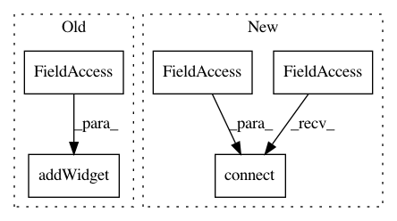

c3ce347ea58d65c5fbd7467a157455a22e4bbbc5,Orange/widgets/evaluate/owconfusionmatrix.py,OWConfusionMatrix,__init__,#OWConfusionMatrix#Any#,41
Before Change
grid = QGridLayout()
grid.setContentsMargins(0, 0, 0, 0)
grid.addWidget(QLabel("Predicted"), 0, 1, Qt.AlignCenter)
grid.addWidget(VerticalLabel("Actual Class"), 1, 0, Qt.AlignCenter)
self.tablemodel = QStandardItemModel(self)
view = self.tableview = QTableView(
editTriggers=QTableView.NoEditTriggers)
After Change
view.horizontalHeader().setMinimumSectionSize(60)
view.selectionModel().selectionChanged.connect(self._invalidate)
view.setShowGrid(False)
view.clicked.connect(self.cell_clicked)
grid.addWidget(view, 0, 0)
self.mainArea.layout().addLayout(grid)
def sizeHint(self):
In pattern: SUPERPATTERN
Frequency: 3
Non-data size: 5
Instances
Project Name: biolab/orange3
Commit Name: c3ce347ea58d65c5fbd7467a157455a22e4bbbc5
Time: 2015-09-12
Author: janez.demsar@fri.uni-lj.si
File Name: Orange/widgets/evaluate/owconfusionmatrix.py
Class Name: OWConfusionMatrix
Method Name: __init__
Project Name: biolab/orange3
Commit Name: 4cfd95265e61eb24a3daf9b906880e4d9025e92f
Time: 2020-04-16
Author: ales.erjavec@fri.uni-lj.si
File Name: Orange/widgets/unsupervised/owdistancemap.py
Class Name: OWDistanceMap
Method Name: __init__
Project Name: mozilla/mozregression
Commit Name: db49b843074772679db7cf4cf60afca800f7b084
Time: 2016-01-29
Author: singhal.saurabh.mnnit@gmail.com
File Name: gui/mozregui/utils.py
Class Name: RangeSelection
Method Name: __init__